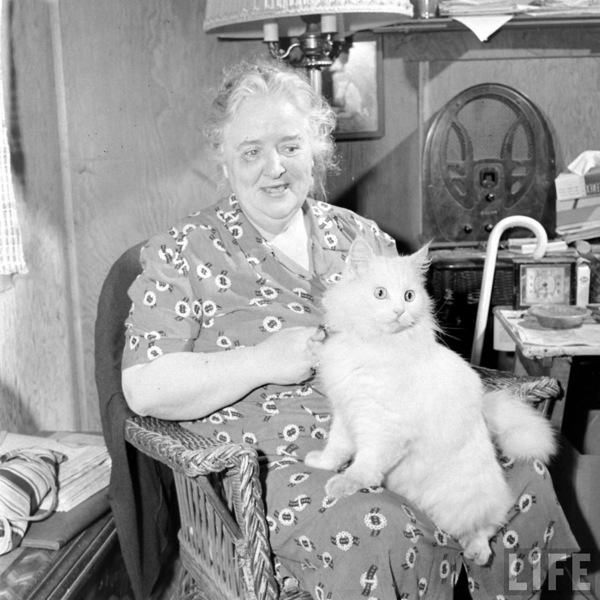
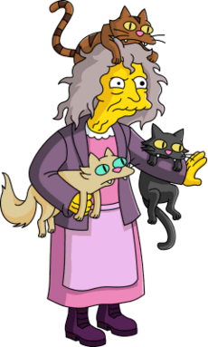
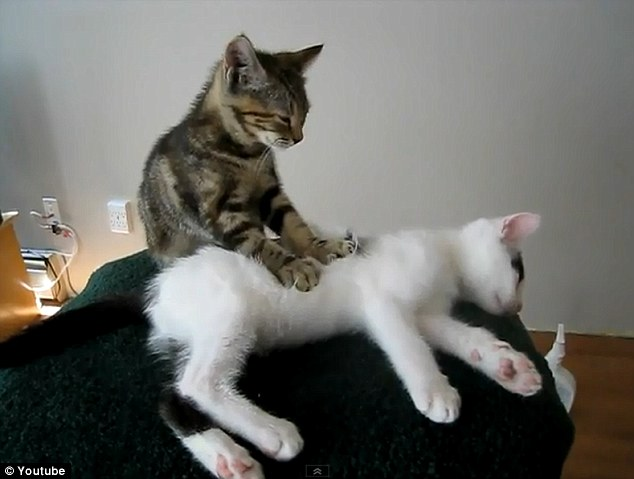

About Us
Our mission is to provide seeing eye cats to laZ ppl. Sure you can get a dog but dogs require you to be active. Dogs are for those who are energetic and outdoorsy. We get it. So get a seeing eye cat instead. These service animals will help you read this website!
About Some of Our Staff
Loren Smith is our founder. In 1947 LIFE magazine published an article about her and her seeing eye cat, Baby. After realizing that Baby was an important part of her life, she wanted to share her experiences and founded our wonderful organization. In her spare time, Loren enjoys such sports as Mixed Martial Arts combat and extreme Volleyball. Read more about here story here
.Elenor Abernathy is our cat trainer. The foremost expert in feline education, Elenor is a staple of our institution. It was Elenor who first discovered that cats are actually decendents of an antient species of underground feline people. Because of her breakthroughs, we are able to communicate with all of our trained cats telepathically, which helps us better serve your needs. She currently has a side project of teaching cats to fly.
Catt Damon is our in house masseuse. He specializes in Meowfascial Release Therapy and Reiki. A former helper cat, Mr. Damon has found his true calling as a masseuse of the highest calubur. Voted Masseur Magazine's masseuse of the year from 2010 to 2014, Mr. Damon has been universally lauded from various organizations around the world for his gentle touch and methodical nature. You are in the safest of hands (or in this case, paws) when you are with Catt Damon.